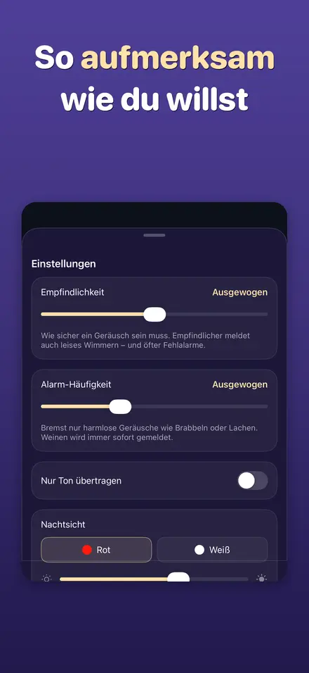
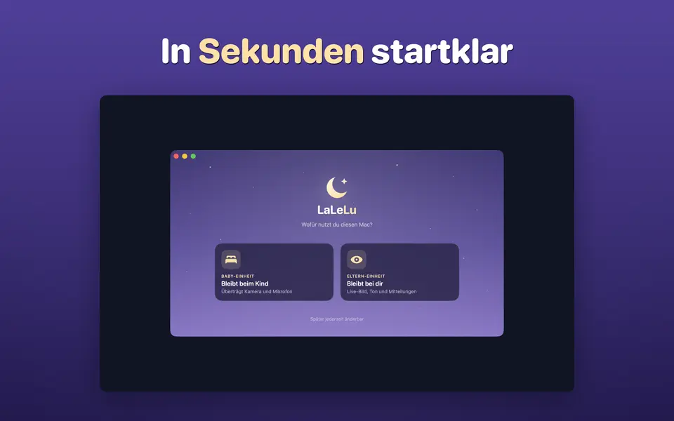

Видео и звук онлайн
Смотрите и слушайте малыша в реальном времени на родительском блоке: по Wi-Fi и вне дома через мобильный интернет.
LaLeLu превращает ваши iPhone, iPad и Mac в приватную видеоняню: видео и звук онлайн, сигнал при плаче и разговор с малышом. Сквозное шифрование, никаких записей.
Для iPhone, iPad и Mac. Нужны два устройства Apple.

Одно устройство остаётся в детской как детский блок, другое становится родительским. iPhone, iPad и Mac можно сочетать как угодно.
Смотрите и слушайте малыша в реальном времени на родительском блоке: по Wi-Fi и вне дома через мобильный интернет.
Распознавание звуков работает целиком на детском блоке. Услышав плач или кашель, приложение пришлёт уведомление, даже при заблокированном экране.
Говорите с ребёнком одним нажатием, не вставая с места.
Белый, розовый и коричневый шум. Таймер выключит звуки, когда малыш уснёт.
Тёмный ночной режим бережёт глаза, мягкая подсветка помогает в темноте.
Смотрите, когда в детской было шумно. История хранится только на вашем устройстве.




Многие приложения-видеоняни требуют подписку, отдельную покупку для каждого устройства или собственный аккаунт. LaLeLu – нет.
| Критерий | LaLeLu | Типичные приложения-видеоняни |
|---|---|---|
| Цена | Бесплатно, на всех устройствах | часто подписка или покупка для каждой платформы |
| Аккаунт / регистрация | Нет, для связывания нужен лишь ваш доступ к iCloud | часто нужен собственный аккаунт |
| Реклама и трекинг | Без рекламы, без SDK слежения | иногда реклама или аналитика |
| Видео и звук | Сквозное шифрование, никогда не записываются | иногда хранятся или обрабатываются на облачных серверах |
| Распознавание плача | На устройстве, звук не уходит в облако | иногда только порог громкости или облачный анализ |
| Устройства | iPhone, iPad и Mac, сочетайте свободно | часто только одна платформа |
Сравнение описывает общие различия на рынке, а не какое-то одно приложение.
Видео и звук идут напрямую между вашими устройствами (WebRTC, DTLS-SRTP). Картинку видят только устройства, которые вы связали сами.
Видео и звук не хранятся ни на одном сервере и не сохраняются в приложении.
Анализ звука идёт локально через Apple SoundAnalysis. Никакой звук к нам не передаётся.
Если честно: для установки соединения и доставки сигнала LaLeLu использует Apple (iCloud, push) и Cloudflare. Что хранится и как долго, подробно описано в политике конфиденциальности (на английском).
Да. LaLeLu – бесплатное приложение-видеоняня без подписки, без рекламы и без функций за доплату. Пробного периода, который заканчивается, нет.
Нет. У LaLeLu нет собственного аккаунта и регистрации. Чтобы один раз связать два устройства, приложение использует доступ к iCloud, который уже есть на вашем iPhone, iPad или Mac.
Нет. Видео и звук передаются онлайн со сквозным шифрованием (WebRTC, DTLS-SRTP) напрямую между вашими устройствами и не записываются ни на сервере, ни в приложении. Если прямое соединение невозможно, всё ещё зашифрованный поток идёт через ретранслятор Cloudflare, который не может его расшифровать.
Два устройства Apple: одно остаётся в детской как детский блок (iPhone, iPad или Mac с камерой и микрофоном), другое – родительский блок (iPhone или iPad). В роли детского блока подойдёт и старый iPhone. Android не поддерживается.
Да. Приложение для Mac работает как детский блок со встроенной или подключённой камерой и микрофоном. Оно остаётся в детской, а ваш iPhone служит родительским блоком.
Да. Соединение устанавливается по общему Wi-Fi, а также через мобильный интернет и другие сети. Обоим устройствам нужен интернет. Дома подключение обычно занимает одну-две секунды, вне дома – часто несколько секунд.
Распознавание звуков целиком работает на детском блоке через Apple SoundAnalysis. Звук не отправляется в облако для анализа, и ничего не собирается для обучения. Услышав плач или кашель, приложение присылает уведомление.
Да. Сигнал приходит как push-уведомление, даже когда экран заблокирован. Разрешите уведомления для LaLeLu в настройках iPhone.
На детском устройстве вы создаёте ссылку или QR-код для связывания, а на родительском открываете ссылку или сканируете код. Это занимает несколько минут. Ссылка – ключ к связыванию, поэтому делитесь ею только с теми, кому доверяете.
Да. Несколько родительских блоков можно подключить одновременно, чтобы оба родителя были в курсе, даже с разными Apple ID.
Скачайте LaLeLu бесплатно и за несколько минут настройте приватную видеоняню.
Бесплатно в App Store